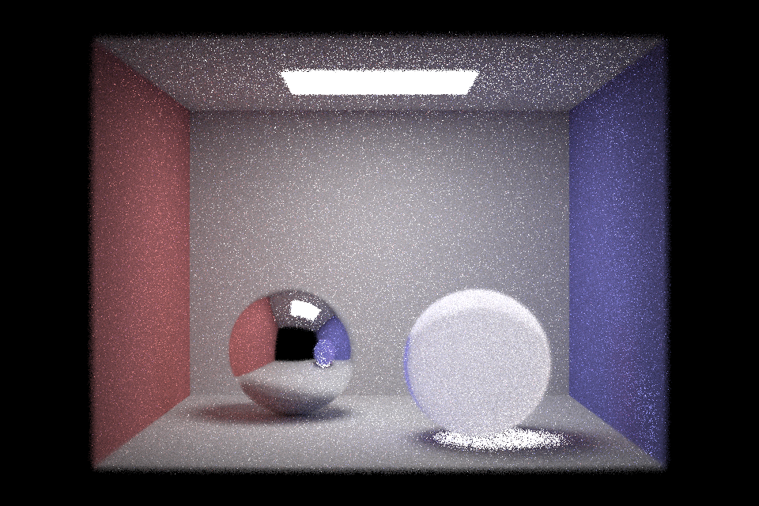
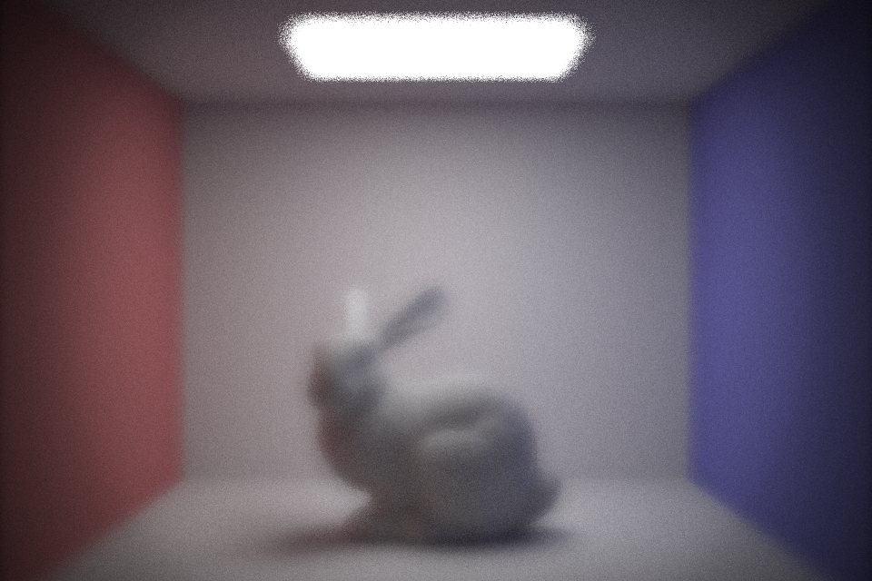

Abstract
In the real world, cameras are not thin-lenses. So, we implemented ray tracing through compound lenses, contrast-based autofocus, optimization, and bokeh effects, to simulate the real-lenses. We were able to programmatically re-create compound lenses and experimented with different perspectives. Our starting point was the starter code from Spring 2016 project Lens Simulator and our own code from previous projects with modifications.
Technical Approaches
Part 1: Tracing Rays Through Lenses
Task 1: Tracing
Given a ray, we need to determine its intersection with the spherical lens element. If the ray intersects with the lens, then, we need to make sure that the intersection point is NOT farther than aperture/2 away from the z-axis. Then, we can refract the ray using Snell’s law.
Refraction is complex for compound lenses. We need to consider both backward and forward rays. We enabled ray tracing from the sensor out into the world as well as from the world backwards through the lens towards the sensor. When a ray is backward, we need to flip the ratio of prev_ior/ior and the normal. One thing to keep in mind is we always need to normalize a vector.
Task 2: Lens and LensCamera helper functions
After implementing the function to find the conjugate of a ray starting from the sensor at depth d, we are able to compute the parameters of the lenses using backward tracing or forward tracing: infinity focus depth (conjugate to object infinity), close focus depth (conjugate to the closest object), and true focal length (can be calculated as |P'-F'|, see image below).
|
|
Then, we build a sampler to randomly sample a point on the 2D circle of the back of the lens element nearest the sensor by generating a random radius and angle of the sampled point. Also, we can generate a ray from the sensor pixel (x,y) pointing toward a point returned by back_lens_sample and trace the ray through the Lens to the world.
Besides the basic functionalities, we also implemented some methods to optimize the performance. The noise reduction algorithm is used for generating rays multiple times and recording the number of rays trying to get correct ray weighting for PathTracer::raytrace_pixel.
Also, we include the correct cosine factor and deal with invalid rays by setting the cosine factor to 0. (Note: for the noise reduction and cosine factor part, we also updated PathTracer::raytrace_pixel and Camera::generate_ray accordingly)
Part 2: Contrast-based Autofocus
After implementing part 1, we were able to manually focus on an image by adjusting the camera sensor depth with ; and ‘, but it would be better if the image can be focused automatically. So, in part 2, we implemented a contrast-based autofocus.
Task 1: A simple focus metric - variance
Our contrast-based autofocus, when focused on an image patch, will set the camera’s sensor depth to the depth that makes the image patch the sharpest. In order to achieve this, we first needed to define a way to judge how sharp a given image patch is. For part 2, we chose the variance of an image patch as the focus metric, and it is calculated using the function below.
- LensCamera::focus_metric
- This function iterates through an image buffer’s data members and calculates the variance of each color channel, then adds them to get the focus metric. Image patches that are sharper (less out of focus) will have higher variance, and blurrier (more out of focus) ones will have lower variance. This is because variance can detect contrast among pixels in the image patches, and an image patch where there is higher contrast and variability among its pixels is sharper.
Task 2: Autofocus search
The autofocus is performed by this function below.
- LensCamera::autofocus
- This function estimates the depth where the image patch has the highest focus metric (i.e. is the sharpest). This is done by stepping through sensor depths from infinity_focus to near_focus, and calculating the focus metric at each sensor depth. If the focus metric is higher than the previous best focus metric, we update the best focus metric and best sensor depth. At the end, we set the camera’s sensor depth to the sensor depth that had the best focus metric. Our step size is sqrt(36*36 + 24*24) / sqrt(screenW*screenW + screenH*screenH). This is because we want the maximum size of the circle of confusion to be <= the size of one pixel.
After implementing these 2 tasks mentioned above, we were able to perform autofocus (demos can be found in the “Results” section below), but we would like to improve the speed of the autofocus process. The main idea is that, because focus improves as we approach the correct image depth and degrades as we move away, we implemented a check that breaks out of the autofocus search if we go 12 steps without updating with a newly found best sensor depth again, based on the focus metric. From these results of the spheres scene, we can see that exiting after 12 steps gives us a pretty sharp image, and it only uses 18.436% of the original autofocus time without this optimization.
|
uses 0.922% of the original autofocus time |
uses 7.989% of the original autofocus time |

uses 18.436% of the original autofocus time |
While this adjustment does not necessarily find the global best sensor depth, it does usually find a sensor depth where the image is reasonably sharp. Since we start from infinity_focus when stepping through all the sensor depths, this adjustment will reduce a larger amount of time if the best sensor depth is closer to infinity_focus (rather than close to near_focus), because it helps cut the time when the sensor depth is becoming farther away from the best sensor depth.
Part 3: Autofocus Continued -- Sum-Modified Laplacian
Implementation
Building off our previous work, we wanted to implement another focus metric and compare it to the our results from part 2. We chose the Sum-Modified Laplacian from the paper "Shape from Focus System" by Shree K. Nayar. In the process of implementation, we also consulted "Sum-Modified-Laplacian Fusion Methods Experimented on Image Stacks of Photonic Quantum Ring Laser Devices Collected by Confocal Scanning Laser Microsopy" by Stefan G. Stanuci, Marin Dragulinescu, and George A. Stanuci.
"Shape from Focus System" addresses that surfaces are rough, meaning they exhibit "high-frequency spatial surface variations." They point out that applying a focus measure operator is equivalent to defocusing the new image that you'd get from convolving a focused image with the focus measure operator. Defocusing is a low-pass filtering process, so an effective focus measure operator high-pass filters the inage.
The Laplacian is a differential operator that measures the divergence of the gradient of a function. In this case, f is the image intensity measured at the point (x, y). To prevent a negative second derivative in the x or y direction which might cancel the other second derivative out, the modified Laplacian is used. To accomodate for possible variations in the size of texture elements, the paper uses a step between the pixels used to compute the derivatives, giving the discrete approximation to the modified Laplacian.
|
(image taken from Machine Learning Mastery) |
(image taken from "Shape from Focus System") |
(image taken from "Shape from Focus System") |
In our implementation, for each pixel in the image patch, we compute the focus metric for that pixel, which is the sum of modified laplacian values in a 3x3 window around the pixel. We compute the modified laplacian value for each RGB channel separately with a step size of 1, and then square these values, sum them, and take the square root of the result as the final value.
The process of finding the best sensor depth is the same as in part 2. We experimented with breaking out of the autofocus search if there were a number of sequential steps that were monotonically decreasing, but this didn't seem to minimize how long the search took so we continued to use the same condition of 12 steps without a new best focus depth.
Part 4: Bokeh Effects
In part 4, we implemented a Bokeh Effect simulator using OpenCV in Python. Given a “mask” (a grayscale image that defines the shape and intensity of the blur) and a target image that we want to apply the blur to, this simulator outputs an image where all the circles of confusion have the same shape as the mask.
Here is our convolutional implementation: After reading in the mask and the color image, we first resize the mask such that it has the same resolution as the color image. Next, we create a third image in order to accumulate the result. Then, we iterate through each pixel in the mask, and for every pixel P(i, j) that is not black, we shift the color image by (i, j), multiply this shifted image by the current mask pixel value, and add the result to the third image (this process is shown in the gif below). Lastly, we normalize the pixel values of the third image by dividing the total number of pixels in the mask that are not black and output the resulting image.

|
Part 5: BVH Optimization
Lastly, one thing our team wanted to try was implementing some BVH optimizations to speed up our rendering and handle more complex scenes. We did this in two ways: using a Surface Area Heuristic to find the best axis to split primitives with, and changing our BVH construction from recursive to iterative.
Surface Area Heuristic
We calculated the cost of processing a node using the surface area of the bounding box of that node.
The surface area heuristic made the rendering process much faster than before, especially on complex scenes such as the dragon scene.
Iterative approach with a stack
This was mainly done by converting the recursive calls to be pushes of node onto the stack. The first node is pushed onto the stack and then while the stack is not empty, nodes are popped off. If they have too many primitives, their primitives are split into a left and right node, which are then pushed onto the stack.
Results
Part 1: Tracing Rays Through Lenses
|
|
|
|
|
|
|
|
Part 2: Contrast-based Autofocus
|

|
|
|
|

|
|
|
|
|
|
|
Part 3: Autofocus Continued
|
to autofocus |
|
|
|
to autofocus |
with simple variance focus metric |
Sum-Modified Laplacian focus metric |
Part 4: Bokeh Effects
|
|
|
|
Part 5: BVH Optimization
Problems encountered and how we tackled them
When we tried to optimize the speed of autofocus in part 2, we first randomly picked the number of steps before the exit to be 8, but the resulting images were usually much less sharper than the results that we got without this optimization. This meant that setting this number to 8 was not a correct choice to make. To solve this problem, we tried to increase this number gradually and paid attention to the result of how sharp the image was as well as how long it took for the autofocus to complete. After our experimentation, we found that setting this threshold to 12 can generate a reasonably sharp image and uses the least amount of time, so we used 12 in our final code.
Another challenge for us was picking good images to show the results of our autofocus and bokeh. One approach we took was attempting to integrate the microfacet code from project 3-2 to use, however we ran into a lot of problems and decided to focus our time elsewhere. We choose images that instead had enough contrast or roughness that the focus metric performed reasonably well for autofocus.
For bokeh, our previous implementation of bokeh was too bright to observe the circle of confusion. This is because we only considered the RGB composition of an image but ignored its HSV. Taking HSV into weight consideration solved the brightness issue. Also, we learned that the image needed to have a dark background to show the bokeh effect well, and needed to have small sources of light or reflection.
Lessons that we learned
We learned from the optimization process that there are trade-offs between the sharpness of the image generated by autofocus and the time that it takes to perform autofocus. When we increase the number of steps before exiting the autofocus search (if the sensor depth is not updated in that many steps), the resulting image becomes sharper, but it also takes longer to complete the autofocus process. This is a common trade-off between quality and time.
References
Spring 2016 Assignment 4 Lens SimulatorSimple Image Manipulations
Spring 2022 Lecture Slide on SAH
Realistic Cameras
A Realistic Camera Model for Computer Graphics
"Shape from Focus System"
"Sum-Modified-Laplacian Fusion Methods Experimented on Image Stacks of Photonic Quantum Ring Laser Devices Collected by Confocal Scanning Laser Microsopy"
Contributions from each team member
Part 1: Shuyao Zhou and Qingsong Ji
Part 2: Haodi Zou and Lauren Leung
Part 3: Haodi Zou and Lauren Leung
Part 4: Shuyao Zhou and Qingsong Ji
Part 5: Qingsong Ji and Lauren Leung